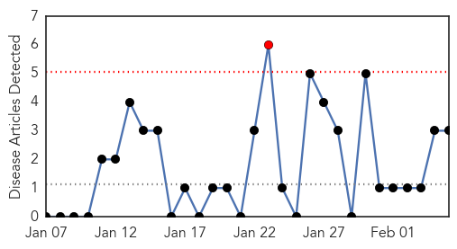
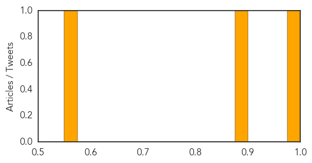

Hepatitis
30-Day Web Trend
1 alerts, 0 warnings

30-Day Twitter Trend
0 alerts, 0 warnings

Article Locations


Article Confidences
Top Articles:
Top Tweets:
-
No tweets found for Feb 05, 2015
Influenza
30-Day Web Trend
30-Day Twitter Trend
0 alerts, 0 warnings

Article Locations
Article Confidences

Top Articles:
- 1.000
- Flu strikes Sudbury hospital
- 0.998
- Flu vaccine gives only ‘low protection’ in UK this winter, experts warn
- 0.997
- Flu outbreak in Hawai‘i
- 0.997
- Low protection flu vaccine warning
- 0.997
- 68 Oklahomans confirmed dead from flu
- 0.996
- Flu vaccine 'barely effective' against main viral strain
- 0.992
- Hong Kong’s flu is so bad this year, the entire city could soon be wearing face masks
- 0.985
- New winter flu vaccine given to millions barely works, according to public health officials
- 0.985
- San Diego flu season death toll rises
- 0.984
- Expert proposes SAR policies for vaccines
- 0.974
- UK, Canada add to bad news on this year's flu vaccine
- 0.958
- 'Wild birds may spread flu virus'
- 0.899
- Pfizer Research Prize 2015 for Valérie D'Acremont
- 0.857
- 2015: Health Minister Confident of Better Sector under Jonathan, Articles
- 0.845
- Avian Flu Scan for Feb 05, 2015
- 0.806
- Just Half of Nursing Home Staff Getting Flu Vaccine
- 0.575
- Scientists plan Hong Kong's own drug factory to end reliance on foreign suppliers
- 0.523
- Flu virus blamed for decade-high rise in Courier country winter death rate
- 0.508
- Mississippi State Researcher Among Those Working on New Flu Vaccine
Top Tweets:
-
No tweets found for Feb 05, 2015